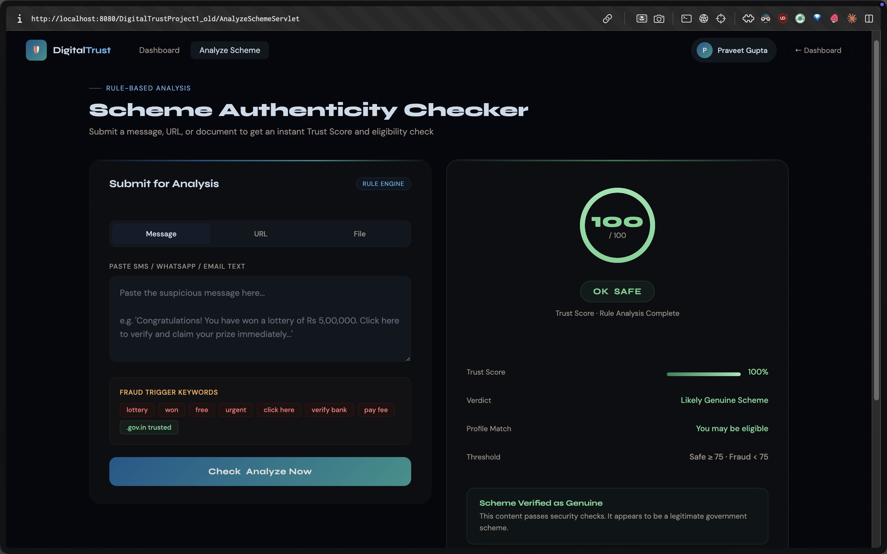
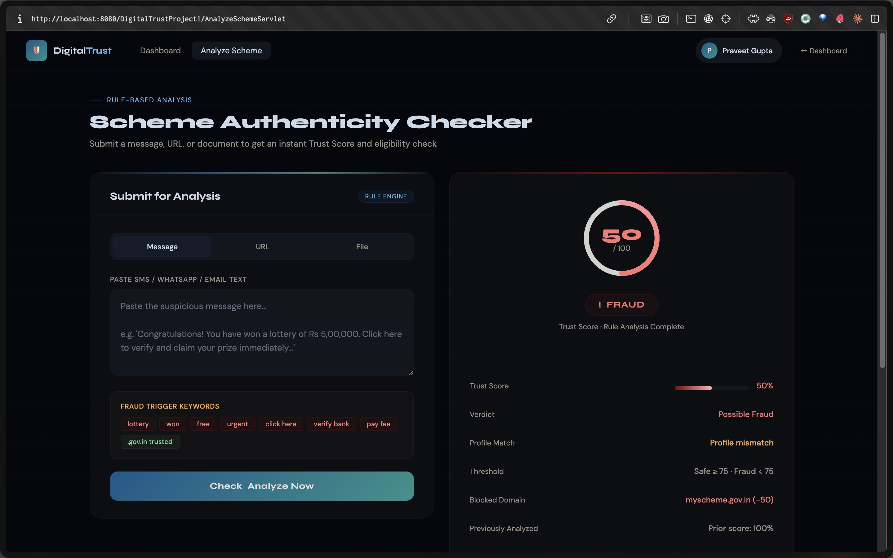

As part of the MPJ practical examination, the faculty assigned an enhancement task over and above the baseline project. The specific ask was:
The enhancement therefore has two linked parts:
analysis table, combine its previous trust score with the penalty from the blocked-domain match so the final displayed score reflects both the older history and the new red flag..properties file?
A Java Properties file was chosen for the blocklist because it is:
Properties.load(InputStream).domain = penalty_points. This allows different domains to carry different severities.WEB-INF/, so it is packaged inside the webapp and protected from direct HTTP access.If a message has been seen before, it already carries a trust score in the database. A fresh analysis gives a new score. To satisfy the faculty’s ask of “previous score + new score”, I compute:
combinedScore = clamp( previousScore − blockedPenalty , 0 , 100 )
This captures both pieces of evidence: the historical trust level and the freshly detected red flag. The result is clamped into the 0–100 range to keep the UI meaningful.
Existing callers of FraudAnalyzer.analyze(input) continue to work
unchanged because the original single-argument method is preserved as a pass-through
to the new overload with an empty blocklist. The database schema is also untouched —
the existing analysis table is reused for historical lookup.
[ User submits message / URL on check_scheme.jsp ]
|
v
[ AnalyzeSchemeServlet.doPost ]
|
|--- reads /WEB-INF/blocked_domains.properties at init()
| into Map<String,Integer> blockedDomains
|
v
[ FraudAnalyzer.analyze(text, blockedDomains) ]
|
|--- extracts URLs, matches host against blocklist
|--- if hit: applies penalty, records blockedDomain,
| forces label = FRAUD
v
[ Servlet queries analysis table:
SELECT score FROM analysis WHERE message = ? ]
|
v
[ If previous hit AND blocked domain match:
combinedScore = clamp(previous - penalty, 0, 100) ]
|
v
[ Forward to check_scheme.jsp with
previousScore, blockedDomain, blockedPenalty,
and final trustScore attributes ]
|
v
[ JSP renders existing detail card +
three new rows (blocked domain, prior score, combined) ]
| # | File | Nature | Purpose |
|---|---|---|---|
| 1 | web/WEB-INF/blocked_domains.properties | New | Admin-editable blocklist with per-domain penalty |
| 2 | src/java/digitaltrust/FraudResult.java | Modified | Carries blocked-domain metadata up to the servlet |
| 3 | src/java/digitaltrust/FraudAnalyzer.java | Modified | Adds blocklist-aware URL scoring |
| 4 | src/java/digitaltrust/AnalyzeSchemeServlet.java | Modified | Loads config, queries prior score, computes combined |
| 5 | web/check_scheme.jsp | Modified | Renders the new rows in the result card |
web/WEB-INF/blocked_domains.properties
# Blocked domains config # Format: domain=penalty_points (bigger = more suspicious) # Any URL whose host matches one of these will be flagged # and have its penalty applied to the trust score. fake-scheme.xyz=60 lottery-win.top=60 scamportal.online=55 pm-yojana-verify.site=65 govt-reward.info=55 claim-subsidy.xyz=60 freecash-india.top=70 praveetgupta.gov.in=50
Entries can be added, removed, or have their penalty tuned without recompiling the project. A Tomcat restart is sufficient to pick up the changes. This is the “config-driven” aspect of the enhancement.
FraudResult.javaTwo new fields and a setter added so the blocked-domain info can travel from the analyzer to the servlet.
private String blockedDomain;
private int blockedPenalty;
String getBlockedDomain() {
return blockedDomain;
}
int getBlockedPenalty() {
return blockedPenalty;
}
void setBlockedDomain(String blockedDomain, int penalty) {
this.blockedDomain = blockedDomain;
this.blockedPenalty = penalty;
}
FraudAnalyzer.javaanalyze() signaturestatic FraudResult analyze(String input) {
String raw = TextUtil.clean(input).toLowerCase(Locale.ROOT);
...
UrlSignal urlSignal = scoreUrls(raw);
...
return new FraudResult(trustScore, label, risk);
}
static FraudResult analyze(String input) {
return analyze(input, Collections.<String, Integer>emptyMap());
}
static FraudResult analyze(String input, Map<String, Integer> blockedDomains) {
...
UrlSignal urlSignal = scoreUrls(raw, blockedDomains);
...
String label;
if (urlSignal.blockedDomain != null) {
label = "FRAUD";
} else if (trustScore >= 75) {
label = "SAFE";
} else if (trustScore >= 50) {
label = "SUSPICIOUS";
} else {
label = "FRAUD";
}
FraudResult result = new FraudResult(trustScore, label, risk);
if (urlSignal.blockedDomain != null) {
result.setBlockedDomain(urlSignal.blockedDomain,
urlSignal.blockedPenalty);
}
return result;
}
scoreUrls()if (blockedDomains != null && blockedDomains.containsKey(host)) {
int penalty = blockedDomains.get(host);
risk += penalty;
if (blockedHit == null) {
blockedHit = host;
blockedHitPenalty = penalty;
}
continue; // skip normal URL scoring for this host
}
AnalyzeSchemeServlet.javaprivate Map<String, Integer> blockedDomains = Collections.emptyMap();
@Override
public void init() throws ServletException {
super.init();
this.blockedDomains = loadBlockedDomains();
log("Loaded " + blockedDomains.size() + " blocked domains from config");
}
private Map<String, Integer> loadBlockedDomains() {
Map<String, Integer> map = new HashMap<>();
try (InputStream in = getServletContext()
.getResourceAsStream("/WEB-INF/blocked_domains.properties")) {
if (in == null) return map;
Properties props = new Properties();
props.load(in);
for (String key : props.stringPropertyNames()) {
String host = key.trim().toLowerCase(Locale.ROOT);
if (host.startsWith("www.")) host = host.substring(4);
try {
int penalty = Integer.parseInt(props.getProperty(key).trim());
map.put(host, penalty);
} catch (NumberFormatException ignored) { }
}
} catch (IOException e) {
log("Failed to read blocked_domains.properties", e);
}
return map;
}
FraudResult result = FraudAnalyzer.analyze(textToAnalyze, blockedDomains);
String dbMessage = TextUtil.truncate(textToAnalyze, MAX_DB_MESSAGE_LENGTH);
Integer previousScore = lookupPreviousScore(dbMessage);
saveAnalysis(dbMessage, result);
int displayScore = result.getTrustScore();
if (previousScore != null && result.getBlockedDomain() != null) {
displayScore = clamp(previousScore - result.getBlockedPenalty(), 0, 100);
}
request.setAttribute("trustScore", String.valueOf(displayScore));
request.setAttribute("isGenuine", result.getLabel());
request.setAttribute("profileMatch",
profileMatches(session, result) ? "Yes" : "No");
if (previousScore != null) {
request.setAttribute("previousScore",
String.valueOf(previousScore));
}
if (result.getBlockedDomain() != null) {
request.setAttribute("blockedDomain", result.getBlockedDomain());
request.setAttribute("blockedPenalty",
String.valueOf(result.getBlockedPenalty()));
}
SELECT score FROM analysis WHERE message = ? ORDER BY id DESC LIMIT 1
check_scheme.jspString previousScoreStr = (String) request.getAttribute("previousScore");
String blockedDomain = (String) request.getAttribute("blockedDomain");
String blockedPenaltyStr= (String) request.getAttribute("blockedPenalty");
boolean hasPrevious = (previousScoreStr != null);
boolean hasBlocked = (blockedDomain != null);
<% if (hasBlocked) { %>
<div class="detail-row">
<span class="detail-key">Blocked Domain</span>
<span class="detail-val fraud">
<%= blockedDomain %> (−<%= blockedPenaltyStr %>)
</span>
</div>
<% } %>
<% if (hasPrevious) { %>
<div class="detail-row">
<span class="detail-key">Previously Analyzed</span>
<span class="detail-val" style="color:var(--muted)">
Prior score: <%= previousScoreStr %>%
</span>
</div>
<% } %>
<% if (hasPrevious && hasBlocked) { %>
<div class="detail-row">
<span class="detail-key">Combined Score</span>
<span class="detail-val fraud">
<%= trustScore %>%
(prior <%= previousScoreStr %> − <%= blockedPenaltyStr %>)
</span>
</div>
<% } %>
To allow a side-by-side demonstration of the baseline product and the enhanced version, the original deployed webapp was duplicated before any edits were applied. Both copies run under the same Tomcat instance and the same MySQL database, so the “previously analyzed” feature works against a shared history.
| Version | URL | State |
|---|---|---|
| Old (baseline) | http://localhost:8080/DigitalTrustProject1_old/ | Frozen — unchanged copy taken before enhancement |
| New (enhanced) | http://localhost:8080/DigitalTrustProject1/ | Contains config file, modified Java classes and JSP |
Additionally, the Git repository was tagged v1-original-baseline immediately before
starting the enhancement work. This provides a second safety net —
the full original source tree can be restored at any time with git checkout v1-original-baseline.
This is the analysis result page as it appeared before the enhancement. The detail card shows only the existing rows: Trust Score, Verdict, Profile Match and Threshold. There is no concept of a blocked-domain row or a historical combined score.
Route: http://localhost:8080/DigitalTrustProject1_old/

After the enhancement, the same analysis page shows the new rows contributed by
the blocked-domain config and the historical lookup. When a URL in the message
matches an entry in blocked_domains.properties, a “Blocked Domain” row
appears with the exact penalty, and the verdict is forced to FRAUD regardless of
other scoring. If the same message has been seen before, “Previously Analyzed”
and “Combined Score” rows are shown as well, making the historical reasoning transparent.
Route: http://localhost:8080/DigitalTrustProject1/

~/start-trust.sh. Both webapp contexts become available./DigitalTrustProject1_old/, log in and analyze a scheme message containing http://fake-scheme.xyz/claim. Note the absence of any “Blocked Domain” row./DigitalTrustProject1/, log in, analyze the same message. The result card now shows the new “Blocked Domain” row with the exact penalty and flips the verdict to FRAUD.web/WEB-INF/blocked_domains.properties, add a brand-new domain (for example praveetgupta.gov.in=50), copy it to the deployed webapps/ path, restart Tomcat. Analyze a message containing that new domain — it now flags as FRAUD without a single line of Java being touched. This proves the design is truly config-driven.The enhancement delivers exactly what was asked: an externally editable blocklist, runtime enforcement of that blocklist against URLs found in scheme messages, and a combined trust score that fuses historical database evidence with the new domain penalty. The design is deliberately minimal — five files touched, no database schema changes, no breakage of existing callers — which makes the system safe to extend and easy to review.
— Praveet Gupta, Roll 57, PRN 1032240179